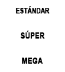
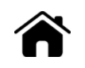

¡Bienvenido a la tragaperras LUCK OF RA! Este juego está inspirado en la antigua civilización egipcia y ofrece diferentes modos de juego, sincronización de carriles, giros gratis, función especial de arriesgar y muchas otras funciones apasionantes.
ACERCA DEL JUEGO
LUCK OF RA se juega con 10 líneas de premio fijas. El juego tiene 10 símbolos normales que obtienen premio si aparecen en 3 o más ocasiones y en carriles adyacentes, comenzando con la posición situada más a la izquierda de una línea de premio.
MODOS DE JUEGOEl jugador puede escoger entre los modos de juego estándar, súper o mega
Modo de juego estándar: se usa el botón de giro normal. Al elegir este modo se juega de la forma normal.
Modo de juego súper: se usa el botón de giro mejorado. Al elegir este modo se hace girar la flecha y se activa la sincronización de los carriles en cada giro. Si la flecha cae en la zona verde, los carriles giran con los mega símbolos activados. Si la flecha cae en la zona roja se pierde la apuesta
Modo de juego mega: se usa el botón de giro mejorado. Al elegir este modo se hace girar la flecha y se entra directamente en el modo de giros gratis. Si la flecha cae en la zona verde, los carriles giran con el símbolo mega scatter totalmente a la vista, lo cual da acceso directo a los giros gratis. Si la flecha cae en la zona roja se pierde la apuesta
GIROS GRATIS
Un símbolo pergamino completamente a la vista activa 8 giros gratis. Antes del bonus de giros gratis,se eligen 2 símbolos diferentes para su uso durante los giros gratis. Los símbolos elegidos se comportan como símbolos ampliables especiales. Si los símbolos especiales aparecen en 3 o más carriles, una vez que se hayan otorgado los premios correspondientes a las combinaciones ganadoras normales, los símbolos especiales se ampliarán y cubrirán todas las posiciones verticales de los carriles en los que se encuentren presentes. Primero se pagará el símbolo al que corresponda un premio más bajo y después el símbolo con el premio más alto. Durante los giros gratis los carriles sincronizados se activarán en todos los giros, lo cual puede mejorar los símbolos ampliables especiales. Durante los giros gratis se pueden obtener giros gratis adicionales si el scatter 3x3 está completamente visible. Se otorgarán 8 giros gratis adicionales con los mismos símbolos ampliables.
COMPRA DEL BONO
La función se puede comprar al precio que se muestra en el medidor de 'compra del bono'. Si el saldo disponible es igual al precio de compra del bono, el saldo se reducirá a cero y la función se activará automáticamente.
ARRIESGAR
El juego ofrece una ronda de arriesgar opcional, que permite al jugador multiplicar su premio total en el juego principal con tan solo adivinar correctamenteel color o el palo de una carta oculta. el color correcta paga x2 y el palo correcto paga x4. la ronda de arriesgar se puede jugar hasta 5 veces seguidas o hasta alcanzar un premio máximo de 250.000 €, o el equivalente en la divisa correspondiente
CÓMO JUGAR
-
Seleccione su apuesta/valor de moneda
-
Haga clic (en versión para escritorio) o pulse (en dispositivos móviles) el botón Girar para comenzar una nueva ronda del juego.
BOTONES DEL JUEGO
|
Icono |
Escritorio |
Móvil |
Acción |
|
|
Girar | Girar | Inicia un giro único |
| Apuesta máx. | (Situado en la pantalla de selección de apuesta, dentro del menú de configuración) | Establece la apuesta en su nivel máximo. Presione el botón Girar para comenzar el juego. | |
|
|
partida auto | Mantenga presionado Girar para comenzar el juego automático (también disponible desde el menú de configuración) | Abre la pantalla del menú en la que que se muestran todas las opciones de juego automático, con las que se pueden jugar múltiples rondas de juego de forma consecutiva. |
|
|
Selección de apuesta | Selección de apuesta (también disponible en el menú de configuración) | Abre las opciones de apuesta para que el jugador seleccione la cantidad que desea apostar. |
|
|
Menú de configuración | Menú de configuración | Abre una nueva pantalla de configuración con las siguientes opciones: Inicio; Audio; Configuración del juego; Historial; Información/Ayuda y Cajero (en caso necesario) |
|
|
Audio | (La sección de configuración principal está disponible en el menú de configuración) | En escritorio: se abre el menú de configuración de audio para que el jugador pueda activar o desactivar la música o los efectos de sonido. |
|
|
Juego turbo | (disponible desde el menú de configuración del juego) | Aumenta la velocidad de giro de los carriles |
| ARRIESGAR | ARRIESGAR | Inicia la función de arriesgar después de los premios del juego principal. | |
|
|
COBRAR | COBRAR | Cobrar la cantidad del premio y saltarse la función de arriesgar. |
|
 |
MODOS DE JUEGO | MODOS DE JUEGO | Selects the play mode with which player wants to bet. |
BOTONES DE CONFIGURACIÓN
| Símbolo | Icono | Utilidad |
| Historial de juego |
|
Muestra una lista de las rondas del juego que se han jugado dentro de la sesión de juego en curso. |
| Configuración de apuesta |
|
Desde aquí el jugador puede elegir su apuesta en el juego o elegir entre varias opciones más. |
| Juego automáticoo |
|
Abre la página desde la que se pueden seleccionar e iniciar varias opciones de juego automático (normal y ampliado), incluyendo los límites de pérdidas (cuando sea aplicable) |
| Configuración del juego |
|
Muestra las diferentes opciones de configuración general (p.ej. configuración de audiopara elegir qué sonidos se escuchan durante la sesión de juego) |
| Inicio |  | Finaliza la sesión de juego en curso (tras una última solicitud de confirmación) y regresa a la página principal del menú de juegos del operador. |
OTRA INFORMACIÓN DEL JUEGO
-
Los premios simultáneos en líneas de premio diferentes se suman y se pagan al jugador.
-
Valor de moneda: muestra el premio teórico correspondiente a la apuesta de la configuración actual. Todos los premios se muestran en monedas, que deben multiplicarse por el valor de la moneda para obtener el valor del premio en dinero. Dinero/Moneda: muestra el saldo de la cuenta ya sea en Dinero (valor monetario) o en Monedas (número de créditos) dependiendo de las preferencias del jugador. La opción predeterminada es Dinero. La conversión de Dinero a Monedas y viceversa se hace con dos decimales para acercarse todo lo posible a los valores originales. Sin embargo, en el juego, las conversiones de Monedas siempre se mostrarán con un número entero.
-
Apuesta: muestra el valor de la apuesta con la configuración actual. El tamaño de la apuesta es igual a 1 moneda multiplicada por el multiplicador de apuesta.
-
LA APUESTA TOTAL ES EL VALOR DE LA MONEDA MULTIPLICADO POR EL MULTIPLICADOR DE APUESTAS, QUE ES 40 MONEDAS.
-
Apuesta máx (SOLO para escritorio): establece el valor de moneda más alto posible.
-
Botón Girar: inicia el juego. Cuando los carriles están girando, el botón Girar se transofrma en el botón Detener Turbo. Presione el botón Detener Turbo para detener los carriles inmediatamente.
-
Juego automático: usted puede configurar el juego para jugar sin tener que presionar el botón girar una y otra vez. Elija la cantidad de rondas de juego automático presionando el botón Juego automático (o manteniendo apretado el botón Girar, para abrir el menú de juego automático (en dispositivos móviles)). Cuando sea aplicable usted podrá elegir condiciones adicionales sobre cuándo detener el juego automático, desde la Configuración del juego. En algunas versiones del software cliente del juego, el límite de pérdidas le impedirá perder una cantidad superior al límite que haya establecido para cada sesión de juego automático. Para detener el juego automático manualmente, presione el botón Detener juego automático.
-
Premio: muestra el premio actual o el último premio que se haya obtenido.
-
Dinero/Moneda: muestra el saldo de la cuenta ya sea en Dinero (valor monetario) o en Monedas (número de créditos) dependiendo de las preferencias del jugador. La opción predeterminada es Dinero.
-
La conversión de Dinero a Monedas y viceversa se hace con dos decimales para acercarse todo lo posible a los valores originales. Sin embargo, en el juego, las conversiones de Monedas siempre se mostrarán con un número entero.
REINTEGRO AL JUGADOR
-
El porcentaje teórico global de devolución al jugador es un 96,01%.
INFORMACIÓN ADICIONAL
-
Todas las combinaciones ganadoras se pagan de izquierda a derecha en las líneas de premio, todas comenzando con el carril 1 excepto las combinaciones que incluyen símbolos Scatter, que pueden empezar en cualquier posición.
-
Los premios obtenidos en las Funciones se pagan además de las combinaciones de las líneas de premio.
-
En caso de fallo de funcionameinto del sortware o hardware del juego, todas las apuestas y premios afectados serán nulos y todas las apuestas serán reembolsadas.
-
El premio máximo del juego tiene un límite máximo de equivalente 250.000 €.
-
Esta es la versión X.X de las reglas del juego, con fecha dd/mm/aaaa.